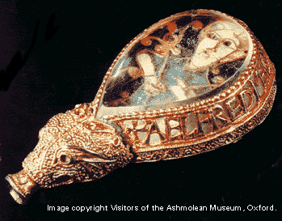

Debate: Alfred vs. Charlemagne
Proposition: The achievements of Alfred were more lasting than the
achievements of Charlemagne.
Remember:
you will be called upon to answer at
least one of the questions as part of the debate; you may (should) also
take
part in other parts if you have things to say that differ from what
your
teammates have said.
Debate:
Team 1:
argue for the Proposition
Team 2:
argue against the Proposition
Assigned
questions - Team 1:
1. Background
- Describe Alfred's family background
2. Background
- Who was Asser? Why did he write a biography of Alfred?
3. Background
- What was the Danelaw? How did it work?
4. Presentation
of the proposition: what is the topic? what is the basis of your argument?
5. Arguments
- select one significant
sentence from the primary sources that that favors your side, and
explain what
it means
6. Arguments
- select one significant
sentence from the primary sources that that favors your side, and
explain what
it means
7. Arguments
- select one significant
sentence from the primary sources that that favors your side, and
explain what
it means
8. Do
the summary, summarizing your team's
arguments and state why they are preferable (you can't do this ahead of
time).
Assigned
questions - Team 2:
1. Background
- What is a burh? Describe in some detail.
2. Background - Describe Alfred's educational and scholarly reforms.
3. Background
- What happened to England
under Alfred's successors until 975?
4. Presentation
of the proposition: what is the topic? what is the basis of your argument?
5. Arguments
- select one significant
sentence from the primary sources that that favors your side, and
explain what
it means
6. Arguments
- select one significant
sentence from the primary sources that that favors your side, and
explain what
it means
7. Arguments
- select one significant
sentence from the primary sources that that favors your side, and
explain what
it means
8. Do
the summary, summarizing your team's
arguments and state why they are preferable (you can't do this ahead of
time).
Primary source
evidence
This debate topic is different from the previous ones; instead of arguing something that was an issue in the Middle Ages, you are being asked to compare two early medieval rulers, and specifically to compare their biographies. The primary source for Charlemagne, therefore, is Einhard's biography, which you read for paper 3. The primary source for Alfred is his biography by Asser, which I have scanned as a PDF file and placed on Oncourse under "resources", as asser.pdf.
There are various ways that arguments could be made, but I think that the one that makes the most sense is to discuss the long-term impact of Charlemagne's and Alfred's achievements. Naturally you can't take it into the future indefinitely; but you might want to look at the following sections in your Medieval Worlds textbook: pp. 155-157 (on the later Carolingians; we will also have discussed this in class on Nov. 3) and pp. 178-184 (on Alfred).
Another thing that you might want to consider is what qualities or characteristics are stressed by Einhard and Asser.
Links to information on Alfred
A short, reliable
summary of
Alfred's reign can be found at:
http://www.the-orb.net/textbooks/muhlberger/alfred.html